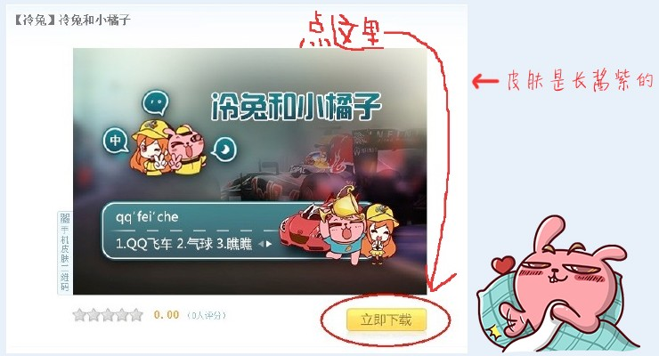
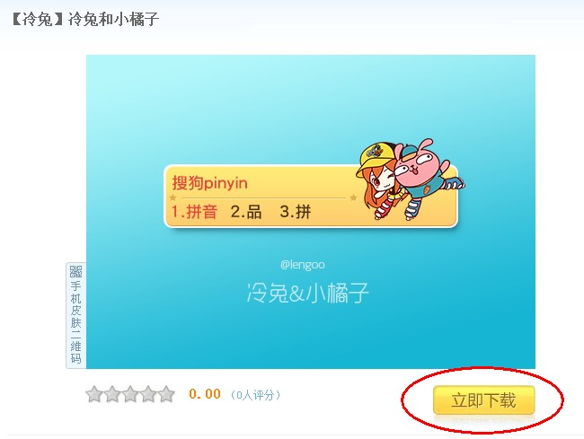
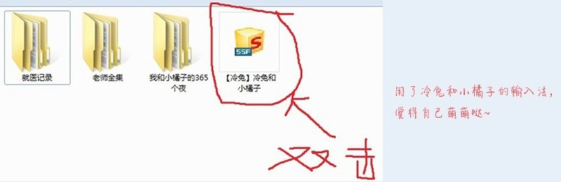

1、首先你要有搜狗输入法（我就不信你还没有）
好吧，你如果真的没有的话。戳下面链接下载吧。。。
链接：http://pinyin.sogou.com
2、进入冷兔输入法皮肤下载页面，下载冷兔飞车皮肤
皮肤一下载链接：http://pinyin.sogou.com/skins/sv_485043.html

皮肤二下载链接：http://pinyin.sogou.com/skins/sv_484827.html

3、双击ssf 格式文件即可快速安装

登录QQ双击下载的eif 格式的文件就可以安装了。（你见过一套表情带这么多车的吗？？简直无情炫富！！！）
这样大气带着清新，清新里散发着文艺，文艺中又不失逼格的壁纸，直接下载你敢信？
校园主题壁纸：微云下载 | 百度云盘下载 | 本地下载
酷玩主题壁纸：微云下载 | 百度云盘下载 | 本地下载